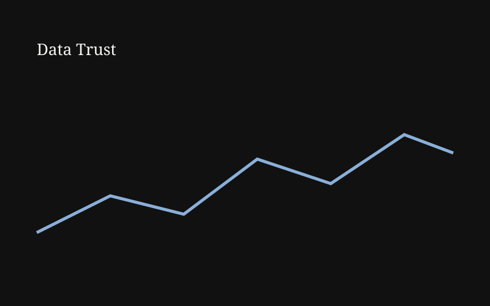
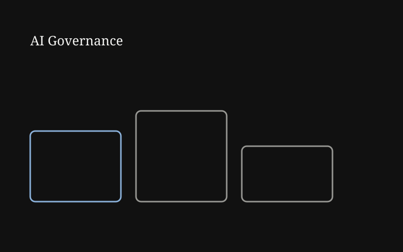
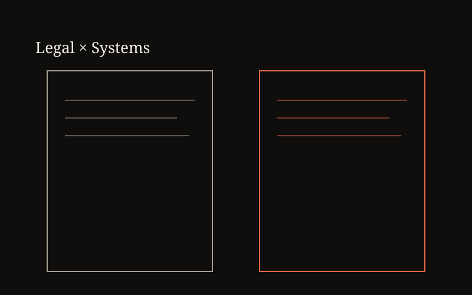

Jan 12, 2026 · 4 min read
What Building a Sales Dashboard Taught Me About Data Trust
Why a dashboard is only as credible as the pipeline feeding it.
MISBI
Read →
Where MIS, applied AI, and legal studies overlap — and what I learn building in that overlap.

Why a dashboard is only as credible as the pipeline feeding it.

EU AI Act risk tiers and the NIST AI RMF, explained without the jargon.

Requirements gathering looks a lot like statutory interpretation once you notice it.